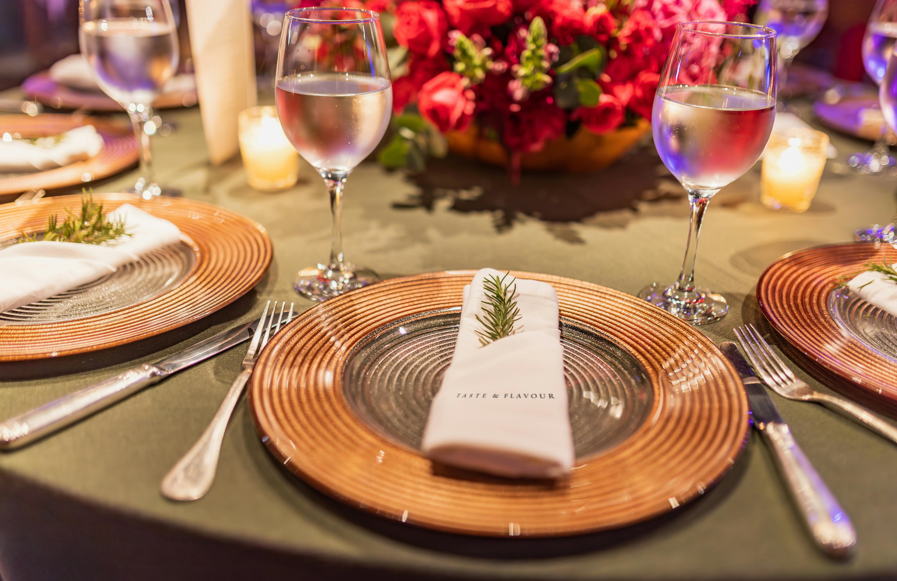
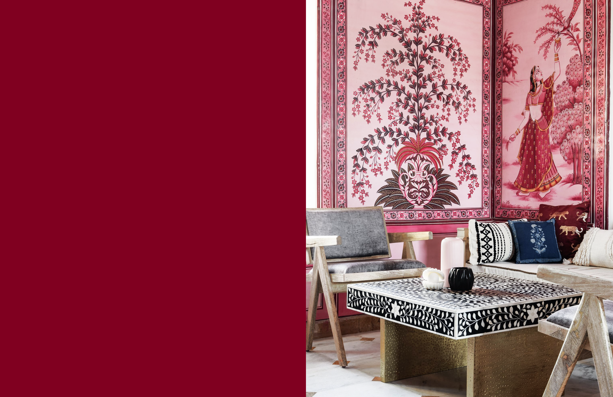
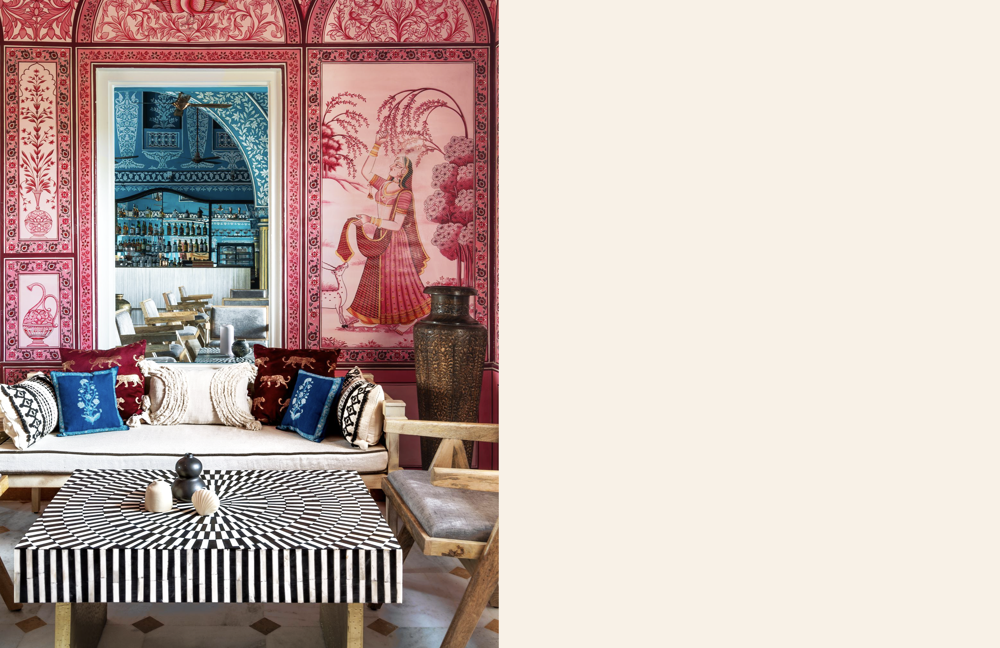
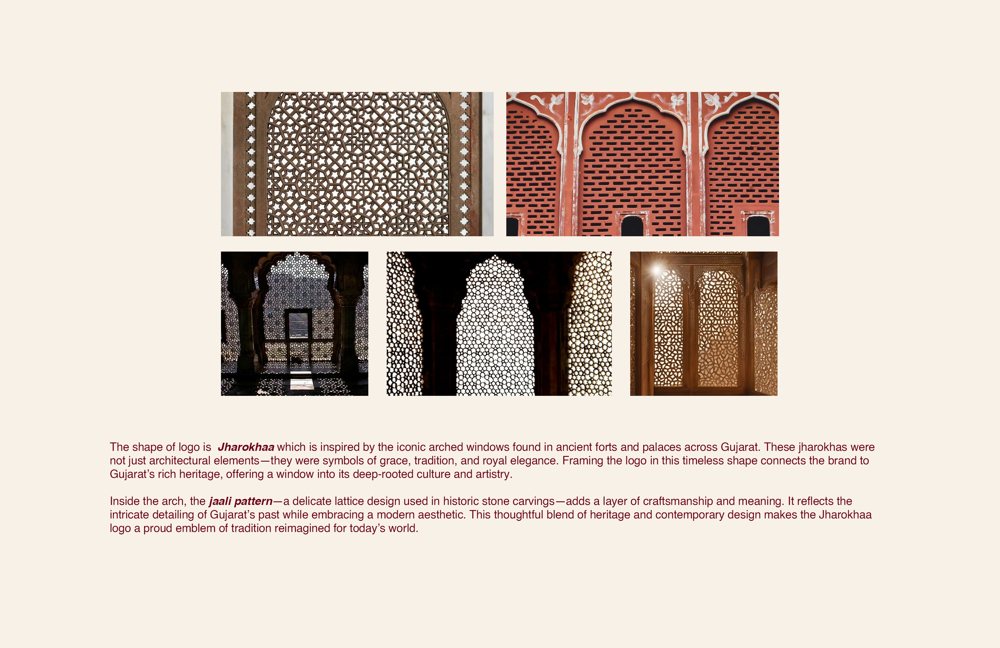
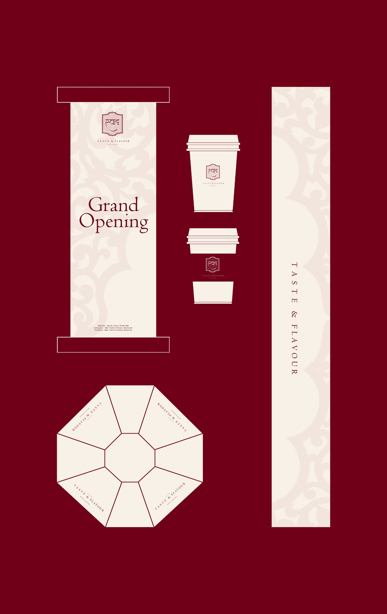
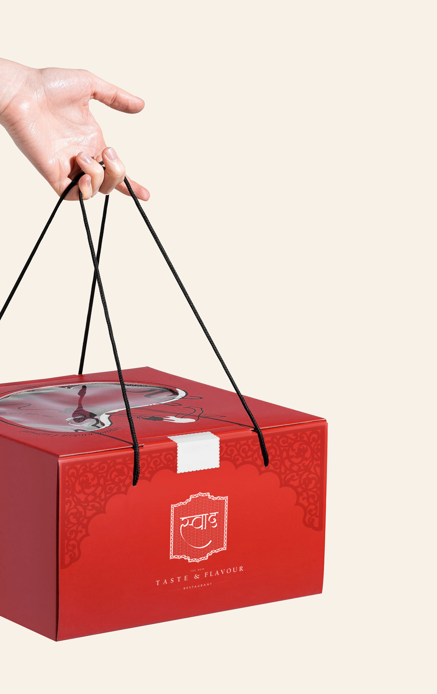
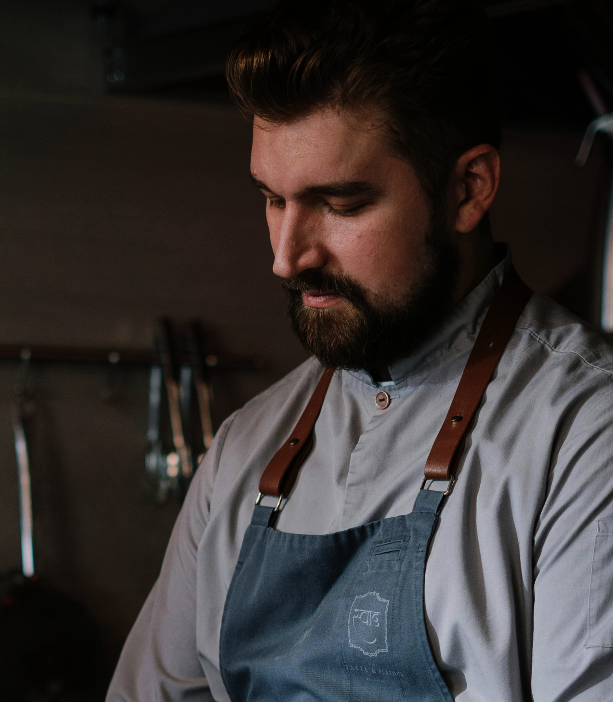

Taste & Flavour Case Study.
Build the feeling before the first bite.
Taste & Flavour needed more than a digital presence. It needed a world people could enter before they ever reached the table.
We translated hospitality into a visual system built around appetite, warmth, detail and desire.

Before the plate, there is anticipation.
The experience begins long before someone sits down. Every frame was designed to make the next moment feel inevitable.

Three moments.
One appetite.



Luxury doesn't have to announce itself.
Sometimes it is quiet.
When the screen ends, the experience doesn't.

Tradition, distilled into a mark.
The monogram draws from the distinctive form of a Jharoka, translating its architectural character into a simple, recognisable mark. Its proportions and curves give the identity a strong sense of place while allowing it to work naturally across menus, packaging, signage, tableware and other brand touchpoints.


One feeling.
Many touchpoints.
Digital direction
A visual world designed to translate hospitality into digital.
Social storytelling
Content designed around appetite, anticipation and atmosphere.
Brand experience
One coherent language from screen to dining table.
Content system
A foundation designed to keep the restaurant's story moving.
